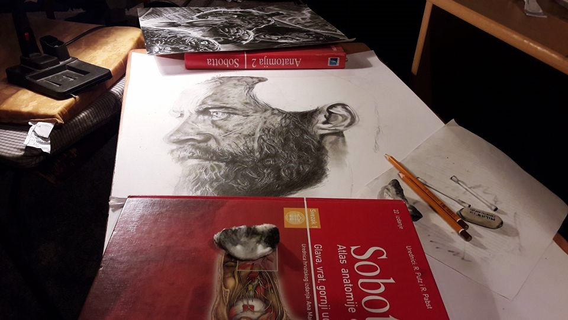
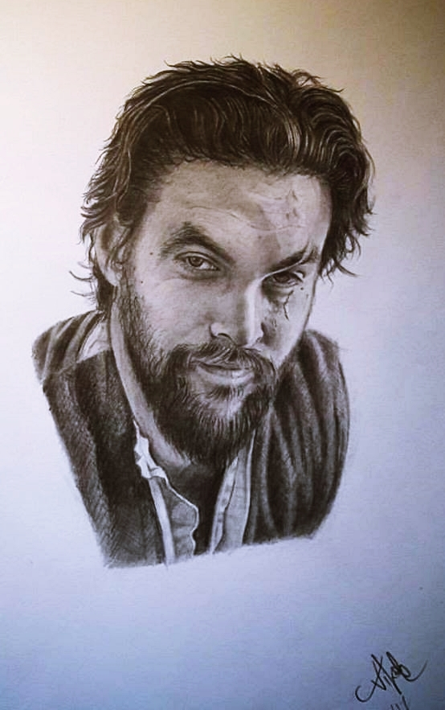

A pile of stones ceases to be a pile of stones the moment a man begins to think of it carrying within himself a picture of the cathedral, said the famous Antoine de Saint-Exupéry. Nikola Lozić, a versatile young artist from Vinkovci whose love for art started at an early age while trying to copy his uncle's drawings, thinks the same way. As a child, he always made family members sit still as he tried to draw them. Being an artist is not a matter of personal choice, nor a matter of schooling, although there is something small in that as well. First of all, one does not become an artist. You are simply an artist or you are not. Professionals perceive art as an occupation, although art is much more than that, those who live for art will tell you, but not necessarily from it. Art is a vocation of life and that constant and constant creative inner scream that you have to somehow let out, one way or another.
“The first drawing I remember was a picture of my parents when I was about 7-8 years old. I gave it to my mother for her birthday and that drawing was great for me then, but I don't think I would be thrilled if I looked at it now ", Nikola joked and added:" I never thought I would do drawing. I always thought it would be music or some activities related to my bachelor’s degree in physiotherapy. At that time, like most people, I did not think that one could make a living from art ", Nikola explained to us. To make the picture, more precisely the drawing, look as realistic as possible, he points out, the most important thing is patience, a lot of practice and a good eye for details, a play of shadows and lights. If the drawing has no depth and good shadows the drawing will look blank and will not leave a good impression, it will look unfinished. The same goes for tattoos because if the image does not blend in with the skin tone, it will lose its strength over time, and therefore the aesthetics of the tattoo will not be the same.
“I like to draw portraits the most, and they are also my favorite when it comes to tattooing. I have always loved to draw people, I am overwhelmed by a special and strong sense of satisfaction when I transfer someone's face faithfully to paper so that the naked eye cannot recognize whether it is a drawing or a photograph, "he explained. Nikola likes to travel to various spheres of art because it is universal and gives him the opportunity to give a part of himself in what serves him as a painting canvas at the moment of inspiration. Be it paper, someone’s arm, leg, or even back. But drawing is not his only love. "In addition to drawing, I also play the piano for which I was educated at the Josip Runjanin Music School in Vinkovci, and I have been playing the guitar for 15 years. For a while, I composed music, drew and did animations for a video game, engaged in music production and graphic design, for which I still find time when I can, ”said Nikola.
A bug in his ear to become a tattoo master was inserted by his friends, who always told him that he had to start getting a tattoo because he draws great. “They probably just wanted to have a friend get a tattoo,” he joked. It all started 4 years ago when I saw what the tattooing process looks like after my first tattoo. It was love at first sight. He ordered equipment and started practicing, learning and researching everything related to tattooing. The process was time consuming because tattooing on human skin is very different from ordinary drawing and painting. It was a long time before he dared to tattoo anyone other than himself. “I’ve always wanted to have my own tattoo parlor. The fact that there is no tattoo parlor in Vinkovci just pushed me forward. Before opening the salon, a lot of people had already heard about me, so I decided to open my salon without fear or hesitation. "I got the idea for the name of the salon 'King's Hand' from the 'Game of Thrones' series, and like most people, I'm a huge fan of the series, as shown by some of the tattoos I have on me," says Nikola.
As he says, there are more and more customers every day. Tattoos alone are great advertisements around the room because everyone sees them, and nowadays everyone likes to brag about their new tattoo on social media. Approximately 40% of its customers are from other parts of Croatia or from abroad. "I also had customers from the USA, so my friends teased me to slowly raise the tourism in Vinkovci with my talent," he adds. New tattoo trends come in every year, last year they were geometric tattoos, and this year they are roses and watches. If the business continues to go this way he will surely open a bigger studio and expand his business. "I want to tell everyone who wants to start their own business in any business just go ahead. If it’s something you love and want to do and you’re confident in yourself right at the start you have succeeded. Do not listen to skeptical people and surround yourself with positive like-minded people who will push you forward and believe in yourself and your abilities ", said Nikola.